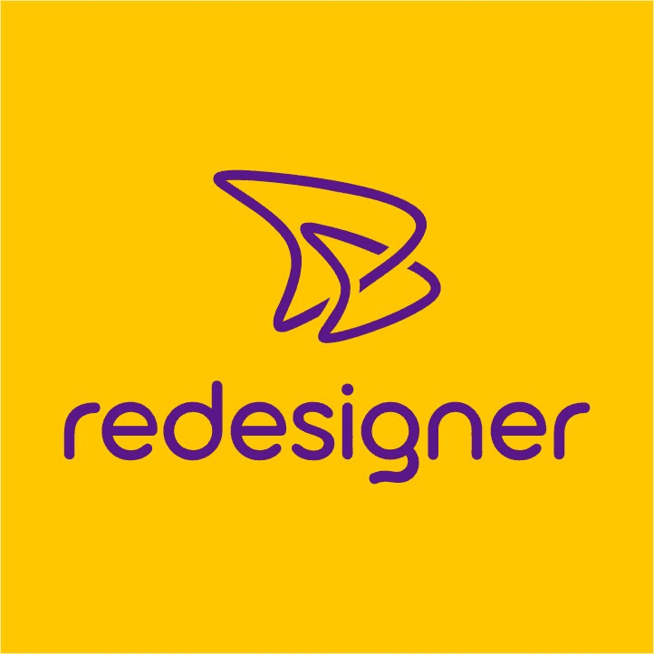

Enquanto sua concorrência posta,
nós o posicionamos.
A agência que pensa antes de criar
A maioria das agências começa pelo design. A Redesigner começa pela pergunta certa: o que esse negócio precisa para crescer?
Clareza brutal
Sem diagnóstico não existe estratégia. Cada ação carrega uma hipótese de negócio, validada por dados reais.
Resultado como único KPI
Posicionamento, visibilidade, autoridade — tudo mensurado no crescimento da sua receita. Não entregamos movimento, entregamos direção.
"Redesigner: a agência que redesenha trajetórias — não apenas marcas."
A logo como declaração de guerra

Não foi desenhada para ser bonita. Foi desenhada para comunicar tensão estratégica.
O símbolo fluido entrelaça duas formas: o estado atual da marca e seu potencial latente. O movimento aberto representa uma espiral ascendente — marcas fortes se reinventam continuamente, mas com consistência. O amarelo vibrante não é estética: é a cor da atenção involuntária, o primeiro estímulo que o olho capta. Sinaliza que aqui não se passa despercebido.
O roxo carrega a tensão entre criatividade e autoridade intelectual. Juntos, amarelo + roxo formam contraste intencional, hierarquia visual e a mensagem subliminar: essa agência pensa diferente, entrega diferente e posiciona diferente.
O mercado está cheio de agências operacionais
Falha comum
Produzem volume, entregam relatório e renovam contrato. O cliente paga, o feed é atualizado — mas o negócio continua estagnado. Postagens sem posicionamento são ruído; anúncios sem diagnóstico são desperdício.
Como a Redesigner resolve
Começamos por onde ninguém começa: diagnóstico do negócio, mapeamento de mercado, construção da arquitetura de posicionamento — e só então executamos. Cada entrega tem um porquê comercial.
engajamento médio em 90d
CPL após 60 dias
alcance orgânico (cases B2B)
Método R3™ — Recriar · Reinventar · Redesenhar
RECRIAR
Diagnóstico profundo: análise competitiva, personas, auditoria digital e gaps de posicionamento. Entregamos um documento estratégico com tom de voz, canais prioritários e metas realistas.
REINVENTAR
Execução integrada: identidade visual, conteúdo, mídia paga, SEO e landing pages. Tudo guiado por objetivo de negócio — não por volume arbitrário.
REDESENHAR
Análise mensal com dados reais, interpretação estratégica e recomendações de ajuste. Não entregamos e sumimos: co-responsabilidade pelos resultados.
O R3 garante que cada real investido tenha direção e métrica de acompanhamento.
O que fazemos (e por que funciona)
Gestão de Redes Sociais
Problema: presença digital sem resultado.
Entregamos: planejamento editorial orientado a posicionamento, copy estratégica.
Resultado: +65% engajamento em 90d, inbound consistente.
Tráfego Pago
Problema: CPL crescente e resultados opacos.
Solução: campanhas em Google Ads/Meta com funil, testes A/B, relatórios transparentes.
Meta: redução média de 30% no CPL após 60d.
Identidade Visual & Design
Inconsistência visual comunica amadorismo. Criamos sistemas de marca escaláveis que transmitem profissionalismo imediato.
Sites que Convertem
Desenvolvimento focado em UX, SEO on-page e velocidade. Seu site se torna ativo de negócio, não apenas cartão de visitas.
Planejamento Estratégico
Benchmarking, personas, linguagem e tom de voz. Clareza para alocar orçamento com inteligência.
Consultoria de Performance
Para equipes internas: análise de indicadores, ajustes de rota e decisões orientadas a dados.
Cases que provam o método — 8 histórias de transformação
🏨 Hotel Paradies Express
Segmento: Hotelaria / Turismo
Problema: Baixa visibilidade orgânica, dependência de OTAs (Booking, Airbnb).
Estratégia: Auditoria SEO completa, produção de conteúdo estratégico para palavras-chave de alta intenção, otimização do Google Business Profile.
Resultados: +90% tráfego orgânico em 4 meses, redução da dependência de OTAs, primeiras posições no Google para buscas locais.
🏭 RG Etiquetas (B2B)
Segmento: Indústria
Problema: Inexistência digital, dependência total de indicações.
Estratégia: Construção de presença digital do zero, gestão de redes sociais com linguagem técnica, campanhas segmentadas no Meta Ads para gestores industriais.
Resultados: +110% alcance orgânico em 90 dias, +3 leads qualificados/mês via canal digital.
🐶 Dorvet
Segmento: Veterinária / Petshop
Problema: Site desatualizado e sem conversão, pouca presença digital.
Estratégia: Criação de site institucional moderno, foco em UX e SEO local, integração com redes sociais.
Resultados: Aumento de visibilidade na região, primeiros contatos comerciais via formulário do site.
🚪 MIB Portões
Segmento: Metal mecânica / Comércio
Problema: Anúncios geravam cliques, mas não orçamentos. Funil quebrado.
Estratégia: Reestruturação de campanhas de tráfego pago, landing page otimizada, segmentação por intenção de compra.
Resultados: -38% CPL em 60 dias, +85% volume de orçamentos solicitados.
🐕 Tio Júnior Táxi Pet
Segmento: Serviços Pet
Problema: Comunicação amadora, sem identidade visual, segmentação geográfica ineficiente.
Estratégia: Padronização visual, tráfego pago geolocalizado, conteúdo emocional para tutores.
Resultados: +120% engajamento nas redes, expansão da área de atendimento, referência em transporte pet.
🌿 Jardin Paysan
Segmento: Jardinagem / Paisagismo
Problema: Baixa presença digital, dificuldade em atrair clientes de alto ticket.
Estratégia: Criação de site institucional com portfólio, gestão de conteúdo e tráfego orgânico.
Resultados: Aumento de leads qualificados, posicionamento como marca premium no setor.
🦷 Odontologia Ideale
Segmento: Saúde / Odontologia
Problema: Site antigo, sem captação de pacientes via digital.
Estratégia: Desenvolvimento de site moderno com foco em conversão, SEO local e integração com WhatsApp.
Resultados: Primeira posição em buscas locais, aumento de agendamentos online.
📊 M. Furtado Contabilidade
Segmento: Serviços Contábeis
Problema: 10+ anos sem site, sem redes, perdendo oportunidades para concorrentes digitais.
Estratégia: Site institucional focado em credibilidade, identidade visual profissional, estruturação digital completa.
Resultados: Primeira presença digital profissional, tráfego orgânico crescente, percepção de autoridade elevada.
Antes e depois do trabalho conjunto
— Ricardo S. | Diretor Industrial, setor B2B
— Ana Paula M. | Proprietária, serviços especializados
— Cliente Redesigner | Setor contábil
Diferenciais que importam
Nenhuma campanha sem entendimento do negócio e dos objetivos comerciais.
Relatórios com interpretação estratégica, não apenas números.
Design, copy, mídia e estratégia na mesma mesa — sem terceirização invisível.
Ajustes ágeis baseados em dados de performance real.
Não entregamos e sumimos: acompanhamos dados e decisões do próximo ciclo.
Escolha o nível de crescimento da sua marca
ESSENCIAL
- ✓ Otimização de perfil (bio/foto)
- ✓ Presença no Facebook
- ✓ Curadoria de imagens profissionais
Ideal para: presença digital inicial.
ConsultarESTRATÉGICO + contratado
- ✓ Tudo do Essencial +
- ✓ Cronograma editorial estratégico
- ✓ Copywriting orientado à conversão
- ✓ Relatórios mensais de performance
Ideal para consolidação de marca.
Quero crescerPREMIUM
- ✓ Tudo do Estratégico +
- ✓ Gestão de tráfego pago (Ads)
- ✓ Consultoria e suporte prioritário
- ✓ Reuniões periódicas de alinhamento
Para empresas que buscam dominância digital.
Falar com consultor* Planos semestrais para garantir continuidade estratégica. Diagnóstico gratuito.
A inteligência por trás das entregas
Transformar presença digital de PMEs em vantagem competitiva real.
Referência em marketing estratégico pelo impacto, não pelo tamanho.
Clareza antes de criatividade · Dados como linguagem · Comprometimento real
Sua marca merece mais do que o mercado está entregando
Em uma conversa de 30 minutos, identificamos onde sua empresa está perdendo oportunidades digitais e apresentamos um plano de crescimento personalizado — sem custo, sem compromisso.
Solicitar diagnóstico estratégico gratuito